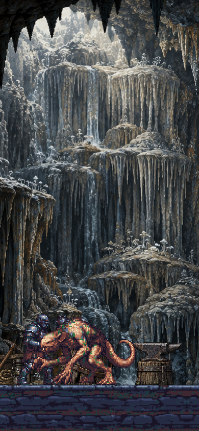
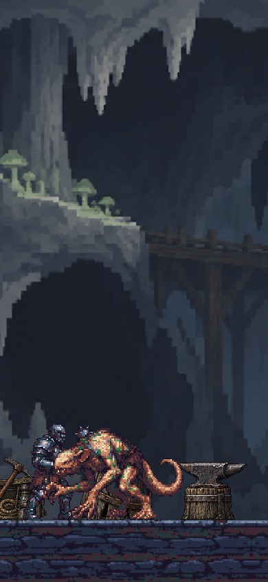

The same game renderer, actors, props and floor with the previous and replacement backgrounds. Drag to compare at phone size.


Native-size exports · Exact generation prompts · Validation and measurements